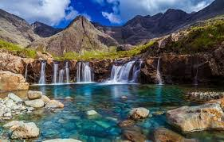
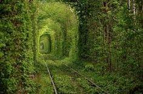
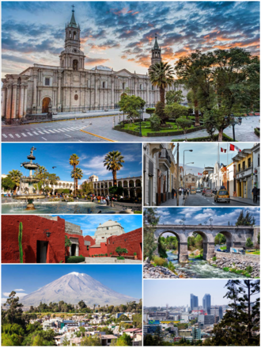
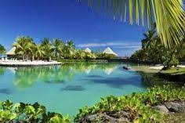
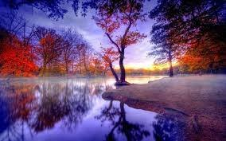
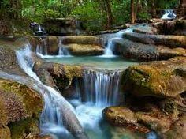

Aogashima se encuentra ubicada en la subprefectura de Hachijō, Tokio, Japón. Tiene un área de 5,98 km² y una población de 198 habitantes, siendo la municipalidad menos poblada del país. Recuerda mucho a la isla de “El Mundo Perdido”, es una fortaleza inexpugnable en mitad del mar, no tiene puertos naturales ni playas sólo altos acantilados y fuertes corrientes. Un lugar aislado, recóndito, paradisíaco que sorprende sólo a la vista. Solo se puede acceder en barco o en helicóptero. ¡Un paisaje verdaderamente impresionante!..
Javier Lorente, fotógrafo, pintor y profesor de pintura. Estudió Filología Hispánica en la UMU. Comprometido en Asociaciones juveniles, culturales, sociales, vecinales y de defensa del patrimonio desde su adolescencia. (Fue Presidente de la Asociación de Vecinos de Pozo Estrecho, de la Federación de AAVV de Cartagena y Comarca y de la Confederación Regional de AA.VV. Fundador y actual Secretario de La Liga Rural del Campo de Cartagena y fundador y actual Presidente de la Asociación de Amigos del Monasterio de San Ginés de la Jara y Ermitas del Monte Miral. Miembro de ArtNostrum, Asociación de Artistas Mediterráneos. Miembro de la Asociación de Amigos del Los Museos de San Pedro del Pinatar. Coordinador del Colectivo de Artistas Plásticos ARTEMISIA, etc.)